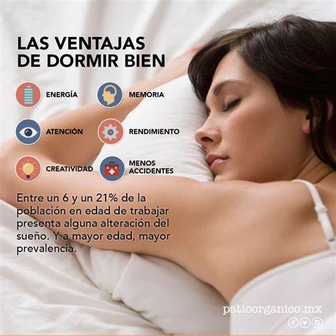

Habitos saludables
Dieta Saludable
Consumir una dieta equilibrada y variada, rica en frutas, verduras, granos integrales, proteínas magras y grasas saludables. Limitar
el consumo de azúcares añadidos, grasas saturadas y sodio.
Una dieta equilibrada es fundamental para proporcionar al cuerpo los nutrientes necesarios para funcionar correctamente y mantener la salud. Puede prevenir enfermedades como la obesidad, la diabetes tipo 2, enfermedades cardiovasculares y ciertos tipos de cáncer.
No Fumar
Evitar el consumo de tabaco en cualquiera de sus formas. El tabaquismo está asociado con numerosas enfermedades graves.
Evitar el consumo excesivo de alcohol
Si se consume alcohol, hacerlo con moderación y siguiendo las recomendaciones de salud pública.
Dormir Suficiente
Asegurar un sueño adecuado y de calidad. Los adultos generalmente necesitan de 7 a 9 horas de sueño por noche.
Actividad física regular
Mantenerse activo mediante la práctica regular de ejercicio físico, al menos 150 minutos de actividad aeróbica moderada o 75 minutos de actividad aeróbica vigorosa por semana, junto con ejercicios de fortalecimiento muscular dos o más días por semana.
Mantener un peso corporal saludable
Mantener un peso adecuado según el índice de masa corporal (IMC) recomendado para su edad y estatura.
Revisiones médicas regulares
Realizarse chequeos médicos periódicos y seguir las recomendaciones de los profesionales de la salud para detectar problemas de salud temprano y abordarlos de manera adecuada.
Programar revisiones médicas regulares según las recomendaciones de tu médico. Esto puede incluir chequeos de salud anuales, pruebas de detección de enfermedades y seguimiento de condiciones médicas crónicas.
Vacunarse
Mantenerse al día con las vacunas recomendadas por los profesionales de la salud para prevenir enfermedades infecciosas.
Las vacunas previenen la propagación de enfermedades infecciosas y protegen a las personas de infecciones graves que pueden tener consecuencias graves para la salud.
Beneficios Fisiológicos
- Mejora la resistencia física
- Aumenta la densidad osea (previene osteoporosis)
- Mejora el perfil lipidico (metabolismo de las grasas)
- Mejora el equilibrio y la coordinación
- Controla el peso corporal
- Mejora la resistencia a la insulina (regula los niveles de azucar en la sangre)
- Mejora la movilidad articular y flexibilidad
Beneficios Psicosociales
- Mantiene la autoestima
- Disminuye la depresion
- Estimula el trabajo en grupo
- Aumenta el bienestar
- Mejora la autoimagen
- Reduce el estres, previene el insomnio y regula el sueño
- Aumenta la autoestima